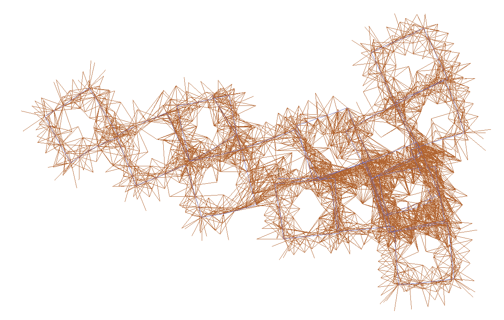
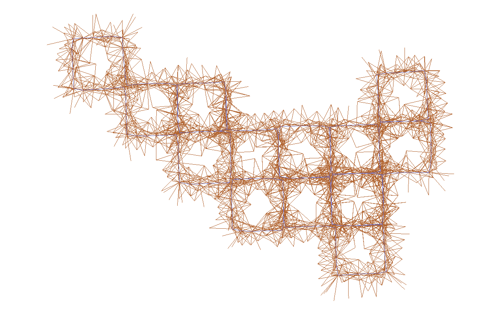

G2O - 入门踩坑记录
G2O入门踩坑记录
在刚开始学习g2o的时候，遇到不少问题，包括代码和编译。在运行tutorial example的时候也出现一些问题，这里做一个记录。同时，把g2o官方的一个入门例子tutorial_slam2d单独拿出来，并进行部分注释和改动，方便后续回顾。
本文主要内容如下：
- G2O编译与安装（编译时如何带上g2o_viewer）
- CMake项目如何链接G2O库
- 解决创建cache时自定义类型找不到的问题
- tutorial_slam2d例子（作为单独项目并依赖安装好的g2o）
一、G2O编译与安装
1.1 编译时生成g2o_viewer
g2o可以将优化图（Graph/Edge/Vertex）保存为.g2o文件，然后使用g2o_viewer可视化。但是默认情况下，g2o_viewer并不会被编译，需要安装额外的依赖。
g2o - README.md中说明了一些可选依赖
1 | ### Optional requirements |
需要满足以上依赖才会编译生成g2o_viewer
依赖安装：
1 | sudo apt-get install libsuitesparse-dev qtdeclarative5-dev qt5-qmake libqglviewer-dev-qt5 |
1.2 编译与安装
1 | cd g2o |
检查build/bin目录下是否有g2o_viewer可执行文件。然后执行安装到系统：
1 | sudo make install |
g2o默认会安装到/usr/local下（/usr/local/lib,/usr/local/include）
二、CMake项目链接G2O库
！！！g2o默认会安装到/usr/local下（/usr/local/lib,/usr/local/include），这个路径并不是CMake默认搜索路径。同时，g2o提供的g2oConfig.cmake似乎也不太对（没有细究），所以需要g2o源码中：cmake_modules文件夹下的FindG2O.cmake文件。同时，g2o依赖CSparse，还需要FindCSparse.cmake文件。
- 将
FindG2O.cmake文件放到项目的cmake_modules文件夹下 - 在
CMakeLists.txt中添加如下代码：
1 |
|
三、编译时fmt错误
g2o目前依赖fmt,但是似乎没有默认链接，编译的时候会报错：
1 | /usr/bin/ld: CMakeFiles/curve_fitting.dir/main.cpp.o: undefined reference to symbol '_ZN3fmt2v86detail18throw_format_errorEPKc' |
解决方法：在CMakeLists.txt中链接fmt库到目标可执行文件：
1 | target_link_libraries(project ${G2O_LIBRARIES} fmt) |
四、运行时一些自定义类型找不到
4.1 报错信息
如果将代码的一部分编译成库，再链接到可执行文件，在编译时不会报错，但是在运行时可能会出现一些自定义类型在被g2o使用时找不到的错误，例如：
1 | fatal error in creating cache of type TUTORIAL_CACHE_SE2_OFFSET |
相关issue
这个问题是因为库被编译成静态库，编译器优化了一些其认为没有必要的代码;主要是在createCache()函数中下面两行：
1 | Factory* f = Factory::instance(); |
上面这个工厂方法在编译阶段返回的是nullptr，因为自定义类型，比如上面的报错信息中TUTORIAL_CACHE_SE2_OFFSET，在编译阶段并没有被注册进工厂，也就是下面这个代码没有被执行：
1 | G2O_REGISTER_TYPE(TUTORIAL_CACHE_SE2_OFFSET, CacheSE2Offset); |
4.2 解决方法1：将库编译成动态库
将库编译成动态库，编译器就不会优化掉上面的代码，这样就可以正常运行了。
1 | add_library(project SHARED ${PROJECT_SOURCE_FILES}) |
4.3 解决方法2：显示调用G2O_REGISTER_TYPE
根据上面的issue,问题出现在由于我们没有显式地调用注册某些类型，主要是Cache。Cache在Edge中是通过一中比较隐秘的方式被创建（Factory），个人理解是编译时并不指定具体类型，而是在运行时根据CacheKey来创建，所以在编译时并不会报错，但是在运行时就会出现上面的问题。
所以解决方法是在编译时显式地调用G2O_REGISTER_TYPE，例如在Main中添加：
1 | namespace g2o { |
然后就可以照常使用静态链接（target_link_libraries默认是静态链接）。
五、tutorial_slam2d例子
g2o源码中的tutorial_slam2d例子，是作为项目的一部分进行编译，所以不用解决g2o安装及链接等问题，为了让例子更符合实际应用，将该例子单独拿出来，作为单独一个项目。依赖系统安装的g2o进行编译和运行。
同时，该例子为了展示自定义类型的实现方法，所使用的Edge和Vertex为自定义类型，但是例子里的实现似乎还缺少一些可视化方法的实现，导致无法在g2o_viewer中显示。 为此，在例子中又添加一个子文件夹，使用内置的数据类型进行实现，使得生成的.g2o文件可以在g2o_viewer中显示。
5.1 代码
项目代码:https://github.com/zeal-up/Slam2d_g2o_example
5.2 g2o_viewer以及其他g2o工具如何加载自定义类型
这一点其实在g2o的官方文档中有说明，但是我看的时候没有注意到，所以这里把原文贴一下
7.4 Plug-in Architecture Both tools support the loading of types and optimization algorithms at run-time from dynamic libraries. This is realized as follows. The tools load from the libs folder all libraries matching “* types ” and “ solver ” to register types and optimization algorithms, respectively. We assume that by loading the libraries the types and the algorithms register via their respective constructors to the system. Listing 1 shows how to register types to the system and Listing 2 is an example, which shows how to register an optimization algorithm via the plug-in architecture. For loading dynamic library containing types or optimization algorithms, we support two different methods: The tools recognize the command line switch -typeslib and -solverlib to load a specific library. You may specify the environment variables G2O_TYPES_DIR and G2O_SOLVER_DIR which are scanned at start and libraries matching “ types ” and “ solver *” are automatically loaded.
这里顺便把g2o源码中包含的官方文档也贴一下（需要用latex编译）：g2o.pdf
5.3 运行结果
例子中实现一个仿真器，模拟机器人在正方形网格中运行。所以真实的轨迹是一些正方形轨迹。但是由于测量误差，轨迹会有一些偏差，所以需要通过优化来估计真实轨迹。
优化前：

优化后：

可以明显看到优化后的轨迹更像一堆“正方形”。